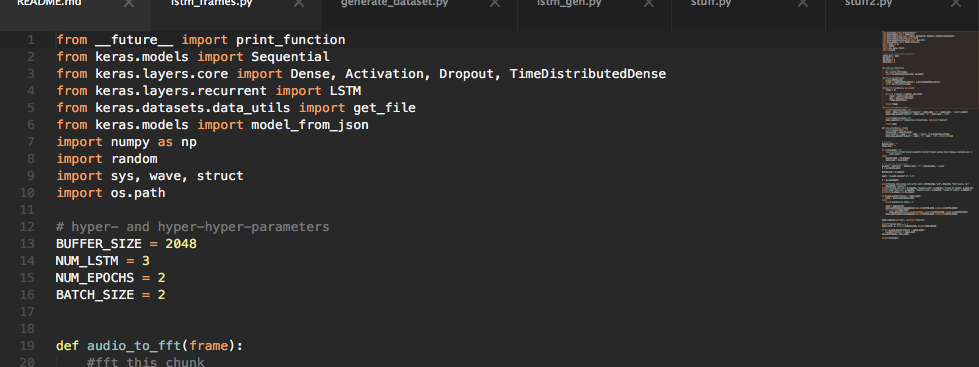
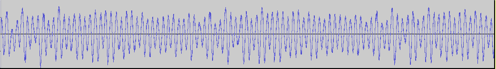
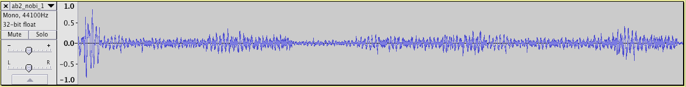
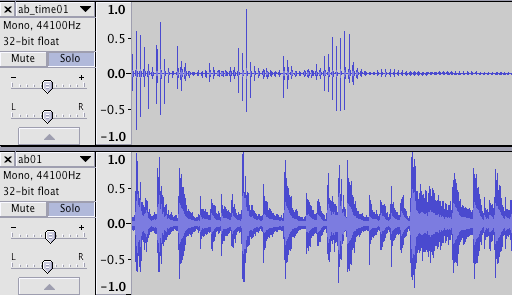

Deep Learning and Sound ~ 02: Generating Audio

So in the last post, I’ve discussed the background and goals of my research. I’ve talked about GRUV, a system which kind of achieves exactly what I’m aiming at. However, I found that the audio generated by the GRUV method has several problems, such as lack of long-term development, noisiness, etc. Today I’m going to show a few examples of what my system, which is currently very similar to GRUV, generates while being trained on various experimental datasets.
Tech setup
For my deep learning experiments, I’ve used a handful of toolkits. Coming from a JS-heavy background, I first worked with convnet.js by A. Karpathy, with which I made quick small systems capable of stuff like segmenting an audio file based on MFCCs, and learning the mapping of MFCC values to position in the file. This is already a useful thing, as it can be used for a sort of concatenative synthesis, based on the desired MFCC values. I’m super interested in developing a recurrent model which could learn sequences of MFCC frames and resynthesize audio based on a generated sequence.
However, I quickly found that node just doesn’t provide a good performance when working with bigger models and high-dimensional input, e.g. CNNs for decent resolution images or WAV audio.
That’s why I transferred to keras, a very versatile library built on top of Theano, which has one massive advantage – GPU support!!! It’s also the library that GRUV is using. It’s reasonably fast, and the API is really well laid-out, albeit (I feel) not comprehensively documented. But because it’s python, and python is awesome, and python has numpy, and python has python -i, it’s also awesome.
I found that using GPU-accelerated Theano in keras reduces training time by ~50%, and that’s on an integrated GPU in a 6-years-old Macbook.
The Model
There is a general consensus in the deep learning community that LSTM networks are currently the most effective RNN architecture for unsupervised learning of time series. So this type of RNN was naturally my first choice for experimenting with audio generation.
Inspired by the GRUV method discussed in the previous post, I’ve set up a keras script for each step of the process – pre-processing, training, and generation. Initially, I started with a method nearly identical to GRUV, where each training example would be a sequence of M timesteps, each of size N. Each timestep would be created by selecting a corresponding chunk of audio, taking the FFT (Fast Fourier Transform, output size N/2) and concatenating its real and imaginary parts as a real-valued numpy array of length N. This supposedly focuses the LSTM on the frequency content of the sound, which may or may not be an advantage – however, since we effectively double up the FFT output, we are left with the same dimensionality as if we simply trained on raw audio signal.
In addition to storing the frames themselves, I’ve also kept track of the overall mean and variance of the entire sequence, as per Nayebi et al.1, and added it back to the generated frames afterwards. This is a good way of only giving the model the bits of sound that change a lot.
I’ve stacked several LSTM layers, also of size N, and wrapped them in the keras TimeDistributedDense layers, which are advantageous because they apply the same function to each timestep in the input sequence, which means fewer neurons are needed.
Experiments
So with this fairly comprehensive architecture, I trained the model on a single recording of me singing some vowels in a constant pitch. This obviously had to lead to overfitting, but as a mere test, it should be fine.
I then had the model predict the next frame based on a “seed frame”. The output was recorded, and appended to the seed, resulting in a longer sequence. After a certain number of iterations, the recorded frames were dumped to a WAV file, which pretty much all the way through looked like this:

Note: I’m not really into soundcloud, and Freesound takes quite a while to moderate submissions, so I don’t have playable embeds of all the files yet. If you know of a good free audio hosting service, please let me know on twitter, I’ll buy you a pint or two.
Now, that does kind of look like a vowel sound – except that, it never changes. There were 4 different vowels in the source recording, but only one ended up in the generated one, and even that didn’t evolve at all. Basically, it was the same audio frame repeated until the end.
After several weeks of trying to make sense of it, I learned that the old saying “know thine APIs …” is indeed true. It turns out that LSTMs in keras have two modes of operation, denoted by whether return_sequences is set to True or False on the LSTM layers. If true, the layer returns the entire generated sequence from its memory, while otherwise it only returns one element in the sequence. What a silly thing to miss. Anyways, after realising that, I knew that with the models that I’ve used, I had to take the last frame from each output of the network, rather than the first one. I’m only including this here because someone might spend weeks trying to work out what’s happening, while they’re just taking the wrong array index.
I then tried this technique on a database of ~250 kick drum samples from an 808 drum machine. I’ve trained the model until the MSE loss fell below ~0.15. Here are some resulting sounds (use headphones please, there’s a lot of low end):
While their envelope looks very much like a kickdrum envelope, there are two weird things about these sounds:
- they’re noisy: 808 kicks are some of the most well-balanced, smooth synthesized kick drums ever. These have way too much high-frequency noise. This may be due to insufficient training (mse=0.15 seems low, but actually, it’s quite a lot considering that it’s only a sort of average measure).
- there’s a gradually rising “tail”: the original samples themselves are very short sounds, trimmed precisely after they fade out. I’ve zero-padded each sample to uniform length M and left the model to go on for a few more frames to see how it would cope. The result seems to be that the network captures some kind of signal, and repeats it after the original sound would have ended, gradually amplifying it until a certain equilibrium point or oscillation is reached. This final “feedback” phase is very interesting and I’m certainly going to investigate it more, as it seems to have some kind of compositional potential.
So having generated some half-decent kick drums, the next logical thing to do is generate an amen break. I found a nice 120bpm amen break on freesound and fed it straight into my scripts. However, using the exact same architecture as for the kick drums, and training all the way down to mse~=0.05, the model only generated things like this:

Now that looks kind of promising – but it sounds terrible, which is why I didn’t bother uploading the sound. The nice clear hit at the beginning is actually the initial seed frame, which comes from the original signal. The rest is a chaotic, yet happily repetitive mélange of noise and slight traces of something that may or may not be drum sounds. The depicted part pretty much loops and continues forever.
It seems strange that even the lossless FFT representation that worked reasonably well for the kick drums doesn’t cut it with a longer, more structured signal. I’ve done many experiments with an “adaptive memory” of sorts, where the size of the input sequence doesn’t just grow as we’re generating more and more sound, but gets trimmed, expanded or kept constant as the algorithm progresses. None of these methods actually forced the model to output anything remotely like the original sound, but they did somewhat reduce generation time, which might be useful for making usable composition tools.
What did work in the end, was the realization that even though the concatenated complex FFT representation is perfectly lossless, it may not be as descriptive of what the sound is, or how it changes. Especially when it comes to percussive rhythmic sequences, the timbral information is much less important than the dynamics of the signal. When I bypassed the FFT/concat transform (the model params didn’t have to change at all, see above), and retrained, I obtained something very pleasing:

Unfortunately, the lower track is not the generated output, it’s the original data. Yet, notice how the weird interrupted peaks in the upper signal coincide with the peaks in the amen break? This is big stuff.
After a bit of analysis of how the strange periodic interruptions may have come about, I’ve decided to do something not quite logical, but intuitively sensible – stop adding back the mean and variance measures at generation time. This is weird, because they’ve been subtracted from (and divided by) the training data, so they really should be missing. But also, the above signal looks exactly as if someone did some “vector x scalar” processing on it.
And boy, did they do some vxc. Without compensating for mean & variance, this well-trained model actually generates an amen break.
This is temporarily on soundcloud because I wanted it online real quick. Will switch to freesound when it gets moderated.
It’s a bit short because I trimmed the training data to 60 2048-long frames, but it is a funky groovin' amen break. It gracefully dissolves into the typical “tail” at the end, but periodically comes back with a bit of the drum beat. Beautiful.
up next
So it’s clear that the stacked LSTM model can basically recreate the input sequence, at least when it’s overfitting on the one single example it’s been shown. Seems like the really interesting stuff is going to happen when it’s trained on hundreds of amen breaks.
Also, without an effective method of reducing data dimensionality, the models will have to be massive, and training will take painful amounts of time even on good GPU-accelerated systems.
Lastly, all of the above findings may prove useless for other kinds of audio signals – e.g. complex harmony, sustained pitched sounds, aperiodic sound structures, etc.
These three problems are likely to be my focus for the months to come.
.-.
[.-''-.,
| //`~\)
(<| 0\0|>_
";\ _"/ \\_ _,
__\|'._/_ \ '='-,
/\ \ || )_///_\>>
( '._ T |\ | _/),-'
'. '._.-' /'/ |
| '._ _.'`-.._/
snd ,\ / '-' |/
[_/\-----j
_.--.__[_.--'_\__
/ `--' '---._
/ '---. -'. .' _.-- '.
\_ '--.___ _;.-o /
'.__ ___/______.__8----'